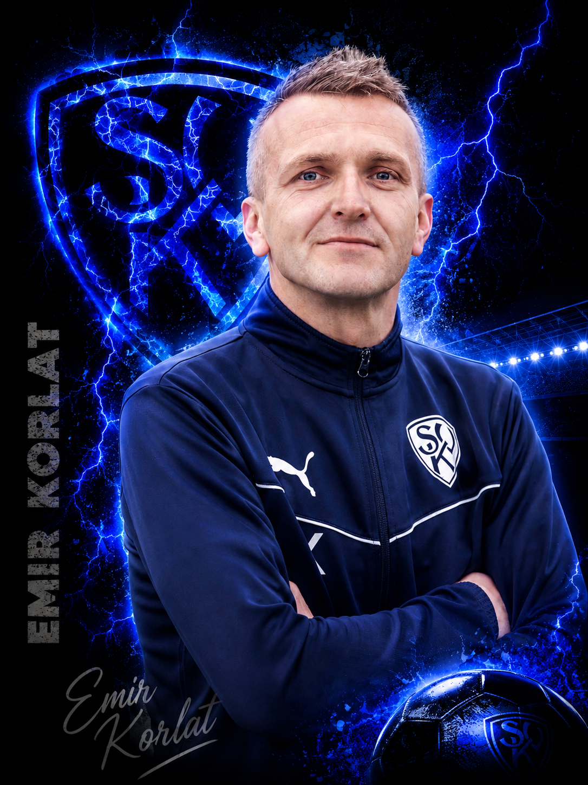

Trainingszeiten
Dienstag, Donnerstag und Freitag jeweils 19:00–21:00 Uhr.

Unsere U19 bildet den direkten Übergang in den Herrenbereich. Teamgeist, Einsatz und individuelle Entwicklung stehen im Mittelpunkt.
Dienstag, Donnerstag und Freitag jeweils 19:00–21:00 Uhr.
Sportpark am Haken, Wolftrigelstraße 15, 87600 Kaufbeuren


Die Jugendleitung hilft gerne weiter.